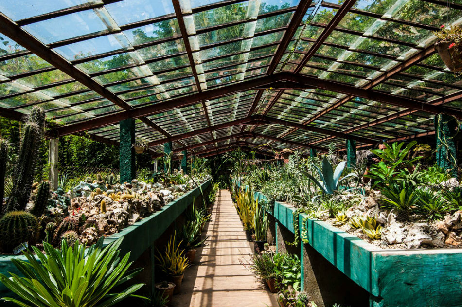
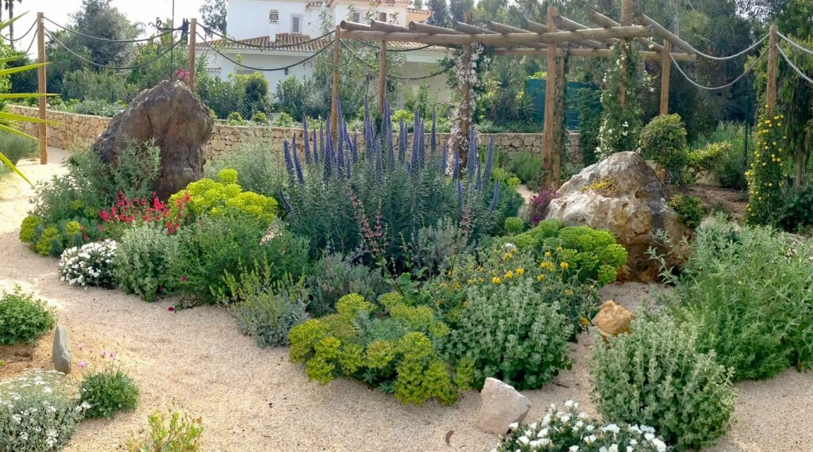
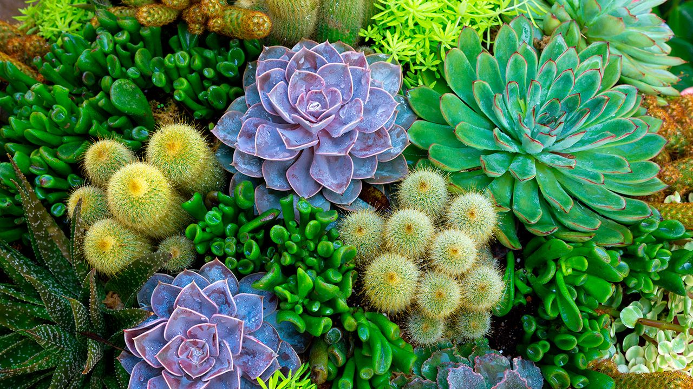

¿Qué es un Jardín Botánico?🌳
Un jardín botánico es un espacio diseñado para la conservación, estudio y exhibición de diferentes especies vegetales. Estos lugares ofrecen un entorno educativo y recreativo donde las personas pueden aprender sobre la biodiversidad y la importancia del medio ambiente.

Beneficios del Jardín Botánico🌳
- Conservación de especies vegetales
- Educación ambiental para todas las edades
- Investigación científica sobre flora
- Espacio de relajación y contacto con la naturaleza

Tipos de Plantas🌳
- 🌳 Árboles nativos y exóticos
- 🌵 Plantas desérticas y suculentas
- 🌿 Plantas medicinales y aromáticas
- 🌷 Especies florales ornamentales

Importancia del Jardín Botánico🌳
Estos espacios ayudan a sensibilizar a las personas sobre la importancia de conservar la naturaleza. Además, permiten investigar especies en peligro de extinción y educar sobre el impacto del cambio climático en la flora mundial.
Actividades en el Jardín Botánico🌳
- Visitas guiadas educativas
- Fotografía de naturaleza
- Talleres de jardinería y compostaje
- Senderismo y observación de aves
Contestas este formulario con lo que te parecio el jardin-botanico ☺️🌳
¿Qué te pareció la información presentada?